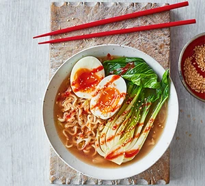

Sesame ramen recipes

Rustle up this warming veggie ramen in just 15 minutes. Think of it as healthy fast food – it's low-fat, low-calorie and low-cost as well
Ingredients
- 80g pack instant noodles (look for an Asian brand with a flavour like sesame)
- 2 spring onions , finely chopped
- ½ head pak choi
- ½ head pak choi
- 1 tsp sesame seeds
-
chilli sauce , to serve
Method
- Cook the noodles with the sachet of flavouring provided (or use stock instead of the sachet, if you have it). Add the spring onions and pak choi for the final min.
- Meanwhile, simmer the egg for 6 mins from boiling, run it under cold water to stop it cooking, then peel it. Toast the sesame seeds in a frying pan.
- Tip the noodles and greens into a deep bowl, halve the boiled egg and place on top. Sprinkle with sesame seeds, then drizzle with the sauce or sesame oil provided with the noodles, and chilli sauce, if using.